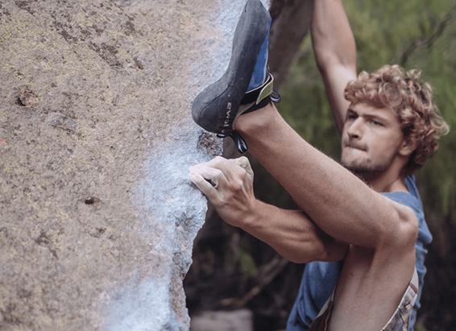
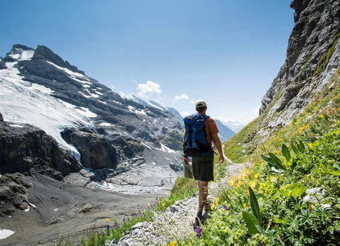

NATIONAL GEOGRAPHIC
Fiordland on foot New Zealand adds another Great Walk to its hiking hit list
TRAVEL
New Zealand’s southwest corner is where the roads run out leaving some 4,500sq miles of forest, fjords and jagged mountain chains that make up the country’s largest area of wilderness. Three of New Zealand’s 10 officially recognised Great Walks take dedicated hikers through the northern interior of this region, along the Routeburn, Milford and Kepler tracks. Soon, the coastal south will get its recognition too, as the Hump Ridge Track becomes the newest member of the top league of Kiwi hikes.
The 38-mile route was originally opened in 2001, but works over the last few years have aimed to upgrade the path and facilities to a high enough standard for it to become the 11th Great Walk. These trails, run by the Department of Conservation, traverse a wide range of New Zealand landscapes and are popular enough that hikers often need to book slots to walk them. The improved Hump Ridge Track is due to open in time for the start of New Zealand’s summer hiking season in November. The intermediate-level loop walk can be tackled in three days, including overnight stays at two backcountry lodges, perhaps under the beady eyes of a kea an olive-green parrot known to enjoy picking at hikers’ possessions.
While the trail reaches almost 1,000m amid the sub-alpine scenery of the namesake Hump Ridge, it’s the views of long, deserted beaches along the Tasman Sea that set the experience apart from more vertiginous landscapes elsewhere in the Fiordland region. There are reminders, too, of sporadic attempts at development before logging was banned in the 1980s. The most impressive is the century-old wooden Percy Burn Viaduct. Although it was abandoned not long after opening amid a downturn in the timber industry, the tall bridge was restored to use five years ago and is a handy surprise to walkers emerging from the fern-choked forest on the edge of a deep valley.
1. Tongariro Northern Circuit
The volcanic heart of the North Island provides a bleakly impressive setting for a 28-mile loop around Mount Ngauruhoe a stand-in for Mount Doom in the Lord of the Rings films. Part of the route is shared with the Tongariro Alpine Crossing day hike, a stretch that includes the eye-popping Emerald Lakes.
2. Abel Tasman Coast Track
Near the northern end of the South Island, Abel Tasman National Park isn’t actually in the tropics, though you’d think so from its golden beaches, turquoise seas and thickly forested hills. A 37-mile one-way walking route traces the coast past waterfalls, across swing bridges and among thickets of tree ferns up to 20m tall.
3. Routeburn Track
You climb high and stay high on this 21-mile tramp across the Humboldt Mountains, part of the Southern Alps between Queenstown and Milford Sound. Once above the tree line, on day two of the three-day walk, the path hugs the mountain shoulders, with soul-stirring views of the braided rivers in the valley far below.
Comments :
- john Very good
- john Very good
Leave a Reply
Your email address will not be published. Required fields are marked*
Related posts:
-
Rock climbing is getting more popular and that concerns conservationists
Even before climbing star Alex Honnold’s stunning “free solo” ascent of Yosemite’s El Capitan in 2017, rock climbing was gaining a foothold. Now, with its debut at this year’s Tokyo Olympics, the once niche sport is set to reach new heights.
View article -
 Will the pandemic crush Nepal’s trekking industry
Will the pandemic crush Nepal’s trekking industryThree vertical miles above the Indian Ocean, eight days by foot from the nearest road, the hamlet of Dzongla sits in a windswept, snow-streaked pass beneath Mount Everest. On either side, Lobuche peak
View article -
6 hiking and biking trails to explore in the Alps this summer
There’s always something afoot at the resort of Laax. In winter, skiers leap off any pipe, rail or lump they can find, having honed their skills at the indoor Freeride Center; in summer, it’s bikers on the Segnes Trail
View article